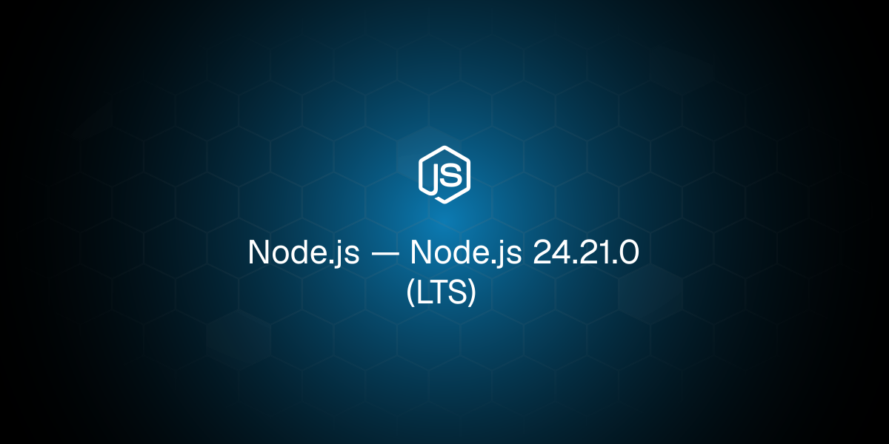
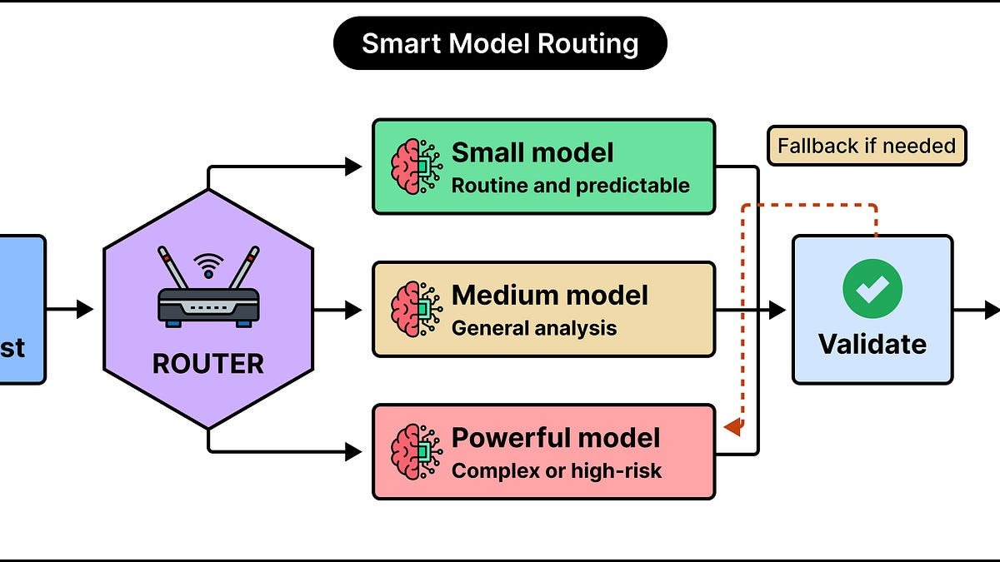
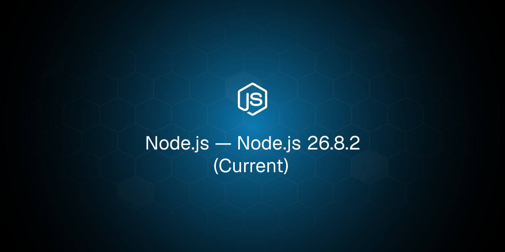
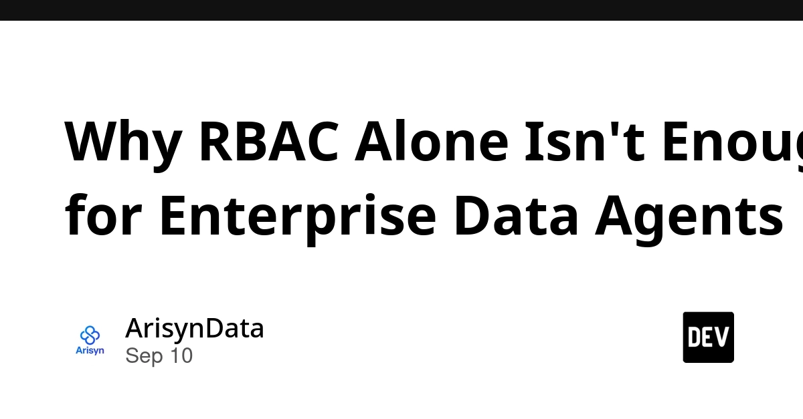
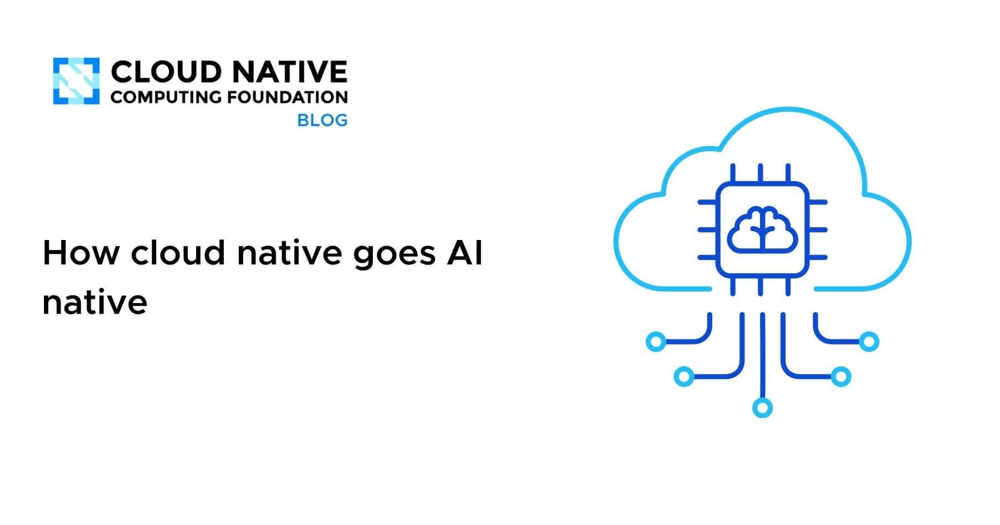
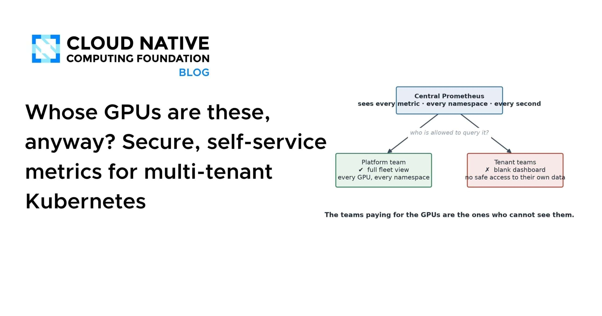
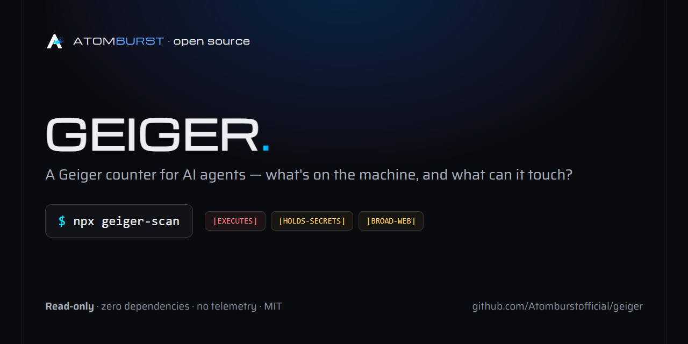
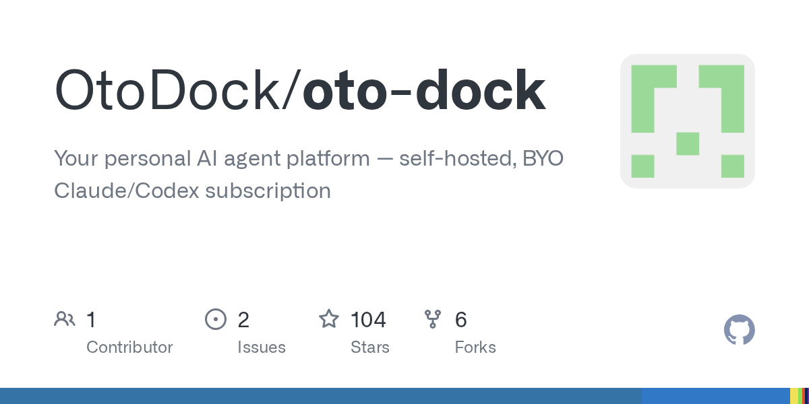
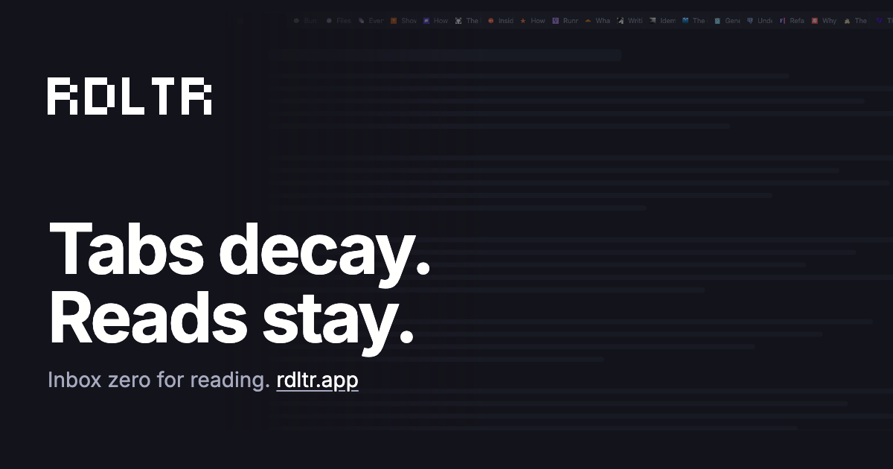

🔥 Top 3 (must read)
Node.js 24.21.0 (LTS)
A new LTS (long-term support) release for the Node.js 24 line. The Current line also got Node.js 26.8.2 on the same day. Why it matters: Your backends most likely run on the 24 LTS line. Check the changelog for fixes and plan the upgrade in your Docker base images and CI.

Kubernetes v1.37: Introducing Node Lifecycle Conditions
Kubernetes now has one shared way to say that a Node is draining, in maintenance, or shutting down. Before this, teams had to read taints, readiness, labels, and cloud-provider APIs to guess the state. Why it matters: Simpler node state means simpler alerts and less noise during rollouts. Good input for your SRE and on-call practice.
K
How Smart Model Routing Can Cut LLM Costs by 10X
A system design walk-through of routing each request to the cheapest model that can handle it. It also covers when routing does not save money: request mix, price gaps, and routing quality. Why it matters: If your team ships LLM features, this is a concrete cost-control pattern you can put on the architecture review agenda.

🛠 Tools & releases
Node.js 26.8.2 (Current)
and Node.js 24.21.0 (LTS) — both lines updated the same day.

Kubernetes v1.37 Node Lifecycle Conditions
a shared, Kubernetes-owned way to describe draining and maintenance.
K
🤖 AI for developers
WeWorm: a zero-click worm spreading via WeChat calls on iOS and Android
the research team found the bug and wrote the RCE (remote code execution) exploit in about two days, working with AI. A warning for anyone shipping mobile apps that handle calls or media.
S
An alignment assessment of recent cybersecurity incidents
Anthropic's view on how AI models behaved in recent security incidents. Useful context next to the WeWorm story.
How Smart Model Routing Can Cut LLM Costs by 10X
the cost pattern from the Top 3.
Why RBAC Alone Isn't Enough for Enterprise Data Agents
role-based access control gives an agent the same rights as its user. That is too much when the agent acts on its own. Worth reading before you wire agents into company data.

👔 Engineering & teams
GitHub availability report: August 2026
five incidents in one month. A good model for how to write your own public incident reports.
How cloud native goes AI native
sales people and designers now write code with AI. The post asks what that does to team roles and platform teams.

Whose GPUs are these, anyway? Secure, self-service metrics for multi-tenant Kubernetes
a cost review where nobody could answer "are we using them?". The fix was per-team metrics on a shared cluster.

🎯 For me
24.21.0 LTS
Node.js: two releases today. The one is the one to schedule.
WeWorm
Mobile: is the clearest example yet of AI speeding up exploit work on iOS and Android. Good reason to review how your Flutter app handles untrusted input from calls and media.
S
CNCF "AI native" post
EM angle: the is a starting point for a team talk about non-engineers shipping code, and who reviews it.
No testing news today. Nothing on Playwright, Maestro, or CI pipelines.
💡 App ideas & indie builds
Geiger – See every AI agent on your machine and what it can touch
(discussion) — a local tool that lists all AI agents installed on your computer and the files, keys, and tools each one can reach. Problem: developers now run 3 to 5 agents (Claude Code, Copilot, Codex) and nobody knows what each can access. Inspiration: "make the invisible visible" tools for a new category of software are cheap to build and easy to explain.

Self-hosted company OS with Claude Code and Codex agents in departments
(discussion) — a self-hosted app that models a company as departments, with an AI agent working in each one. Problem: small teams want AI to do real work, but chat windows do not fit into how a company is organized. Inspiration: put agents into a structure people already understand.

Rdltr – Inbox zero for your reading list
(discussion) — a read-later app that treats saved articles like email: read it, archive it, or let it go. Problem: read-later lists grow forever and cause guilt. Inspiration: borrow a habit from one domain (inbox zero) and apply it to another. Small idea, clear story, 17 comments of real user feedback.

🎓 Try this
Run Geiger on your laptop. It shows every AI agent you have installed and what each one can touch. Ten minutes gives you a clear picture before you decide which agent permissions to tighten.